本轮完成
四份知识稿先明确学习结果、术语、图与操作，再形成四个不同场景的立体纸本画卷和各自的主演示。画卷只作定位：桌面320–400px，区域半透明高亮、标签放在图外；真实照片、实际数据图、掩膜和原文来源负责解释计算。正文18px、说明至少16px，以朱红、暖白、蓝灰和赭金组织。
四例原计算引擎与原始数据保持不变；页面默认实际计算，条件改变后自动更新。集中工程面板已移除，底部小入口保存当前结果。四例各有独立新手审阅及修订复核。
2026-10-29 · m1／m3／m4／m5 v1.7.1；当前m2保留 · 门户1.9.2-preview
当前五例合集 · 知识稿、画卷与证据包 · 门户 · 完成与未验证范围
四份知识稿先明确学习结果、术语、图与操作，再形成四个不同场景的立体纸本画卷和各自的主演示。画卷只作定位：桌面320–400px，区域半透明高亮、标签放在图外；真实照片、实际数据图、掩膜和原文来源负责解释计算。正文18px、说明至少16px，以朱红、暖白、蓝灰和赭金组织。
四例原计算引擎与原始数据保持不变；页面默认实际计算，条件改变后自动更新。集中工程面板已移除，底部小入口保存当前结果。四例各有独立新手审阅及修订复核。
| 层次 | 结果 | 含义 |
|---|---|---|
| 源码／内容／哈希 | 18项通过 | 结构、知识稿、资源、普通脚本、文件保护；不是浏览器通过。 |
| 数值／协议 | 37项通过 | 复用原模型、基线、独立评价、来源协议的必要检查；不是浏览器通过。 |
| 实际Chrome | 174项通过 | 四例169项；m2与老师原样例门户回归5项。 |
| 实际保存 | 12份JSON | 每例离线1份、原站刷新前后各1份，全部再经既有协议验证。 |
| 案例 | 浏览器结果 | 路径 | 记录 |
|---|---|---|---|
| m1 岩屑识别 | 41项、0失败 | 离线、窄屏、增强门户、原站导入／刷新／保存 | 逐项记录 |
| m3 荧光判读 | 42项、0失败 | 离线、窄屏、增强门户、原站导入／刷新／保存 | 逐项记录 |
| m4 钻时分段 | 44项、0失败 | 离线、窄屏、增强门户、原站导入／刷新／保存 | 逐项记录 |
| m5 录井报告 | 42项、0失败 | 离线、窄屏、增强门户、原站导入／刷新／保存 | 逐项记录 |
汇总 · 真实CLI操作 · 源码／哈希记录 · 数值记录 · m2与原样例回归。自动化失败尝试保存在attempts，未计入通过数。
真实岩芯照片先讲岩石线索；教学盘从真实像素分割轮廓，显示选中区域特征及实际近邻。照明过曝后轮廓消失，锚点保留，不换成另一颗粒。重排情景显示“颗粒身份未确认”；计数与可见面积同屏保留各自分母和待复核。
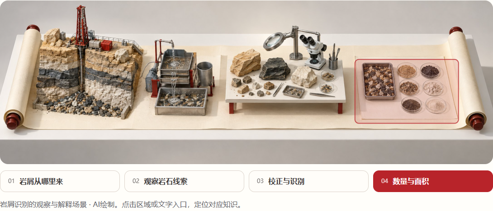
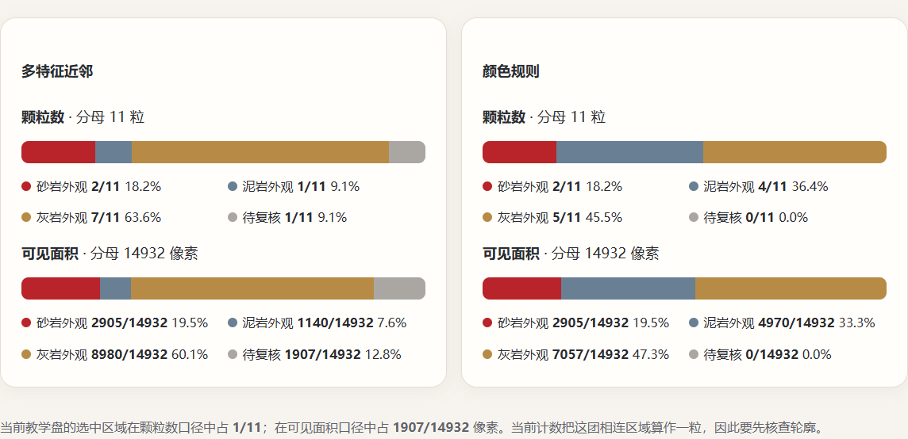
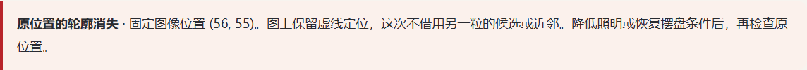
真实方解石白光／UV说明矿物也会发光；实际方法比较固定白光可见范围。在4倍曝光时，三法分母仍为14582像素；原始阈值3475、校正阈值2084、学习法3472。界面与保存的当前主结果一致，0—1学习得分明确连接到特征、训练统计、权重和阈值。
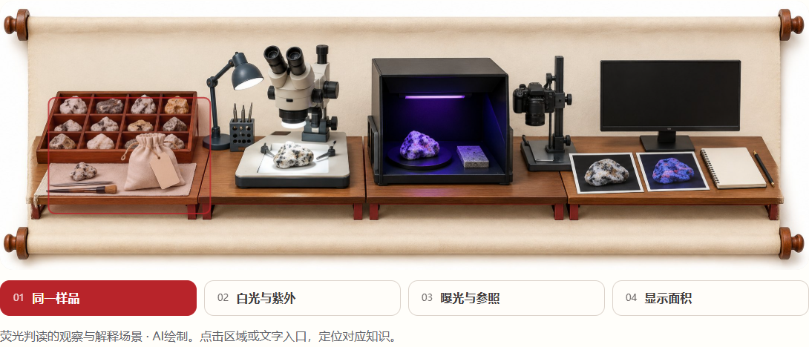
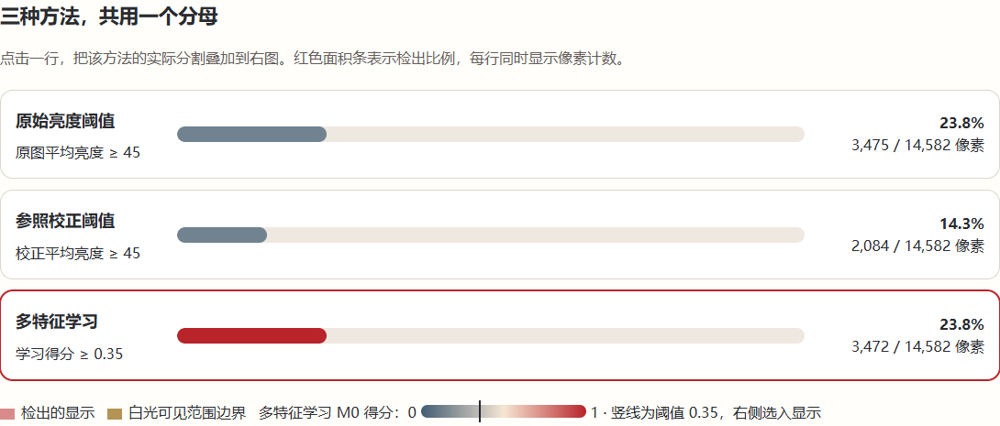
真实USROP读图与受控情景分开。工况开关改变1240m相对响应，原始ROP不变；并不强称最终界面必变。薄层实验显示设计厚度、实际点数和预测区间：2m设计段实际7个点、2个候选界面；0.25m仅1点，未形成候选。
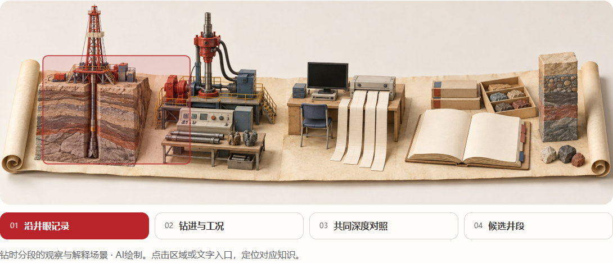
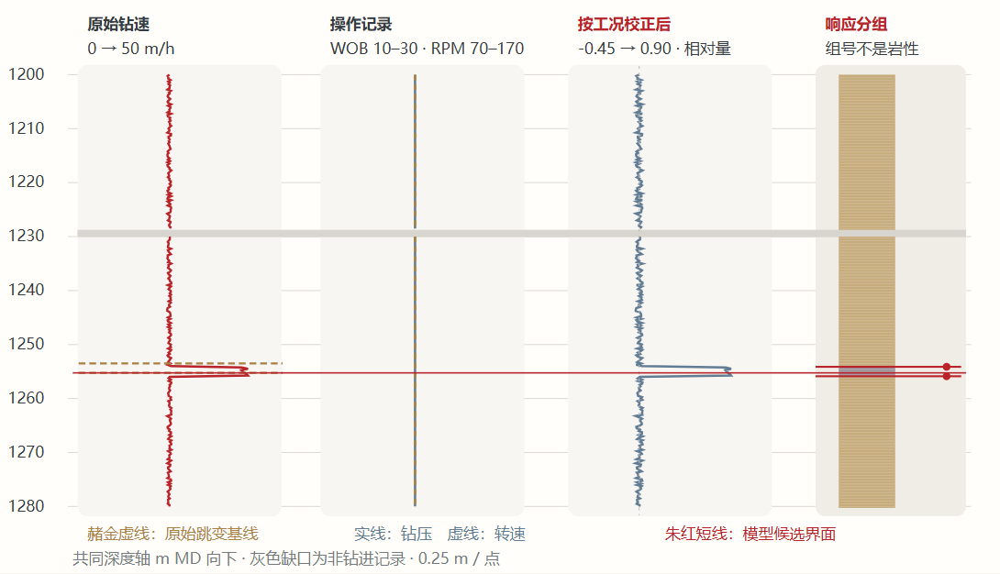
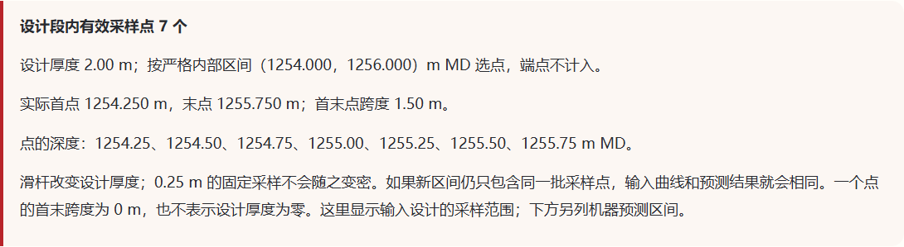
保留一个原文编辑区，按钮实际改变否定、数值和范围；分类与字段抽取各有对应产物。报告点击回查原文，继承井段使用另一处真实引用与蓝灰高亮，当前观察用朱红。修改原文后撤销旧确认，历史按内容与来源匹配；自由改写的指标为空。
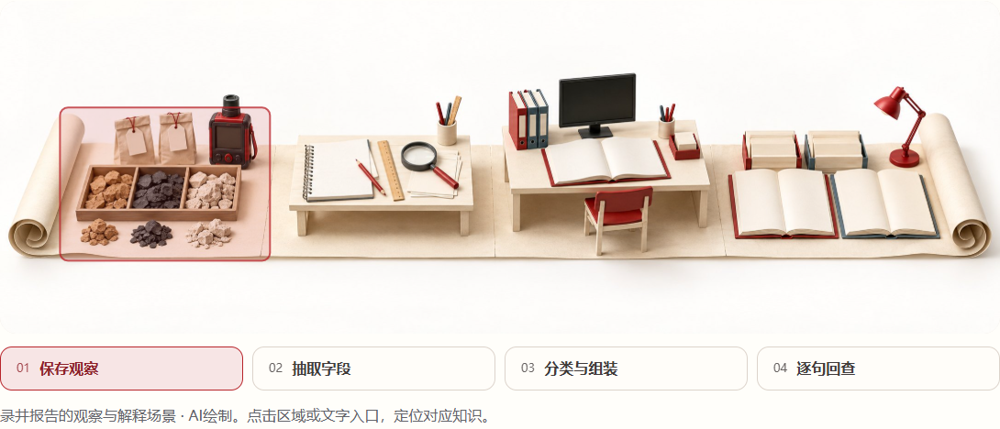
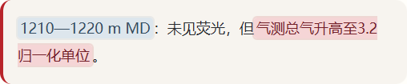
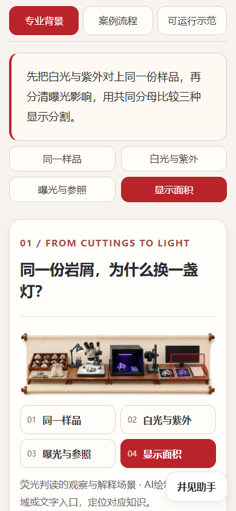
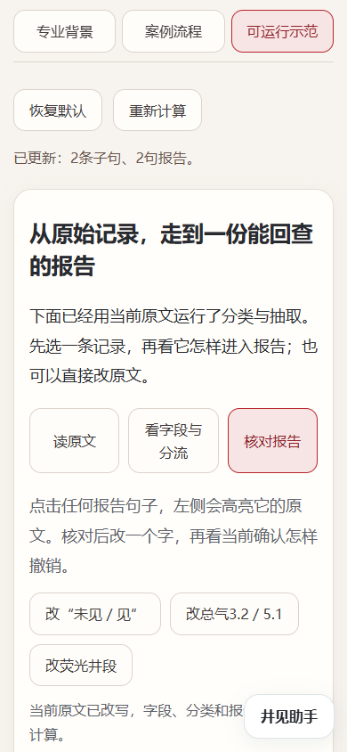
老师原站未修改：四例通过“添加案例”选择5文件目录，背景与流程是清楚的静态预览，沙箱演示可重算；刷新后再次操作、保存。
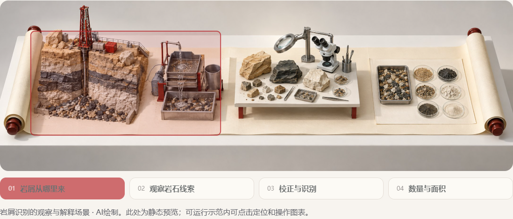
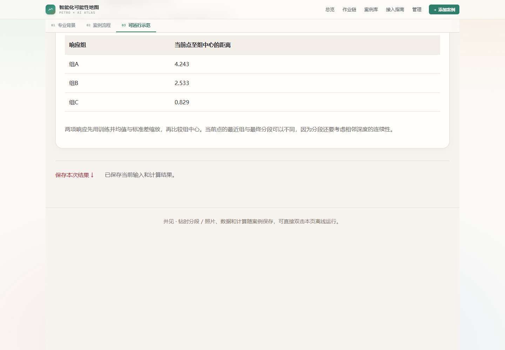
m2和其他56例共57例285个运行文件、63个原站／材料保护文件、原引擎与真实数据保持字节一致。首页15个文件另与任务开始前提交0fa9d31比较并锁定。历史m2和61例报告保持原日期与原范围。
本轮没有重新逐例运行其他56例，没有重跑m2全套验收；未覆盖全部参数组合、实体手机、Firefox／WebKit或在线助手与语音服务。默认算法演示继续使用可控教学数据，真实照片和实测曲线用于专业观察，没有拼接为未配对的真实分类实验。